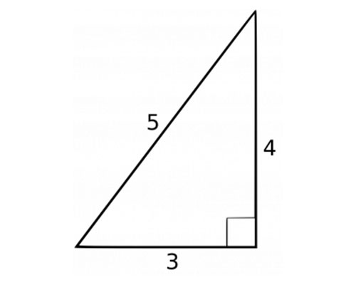
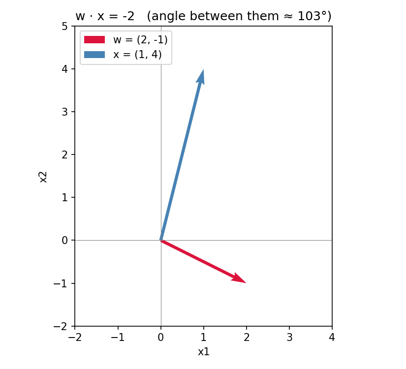
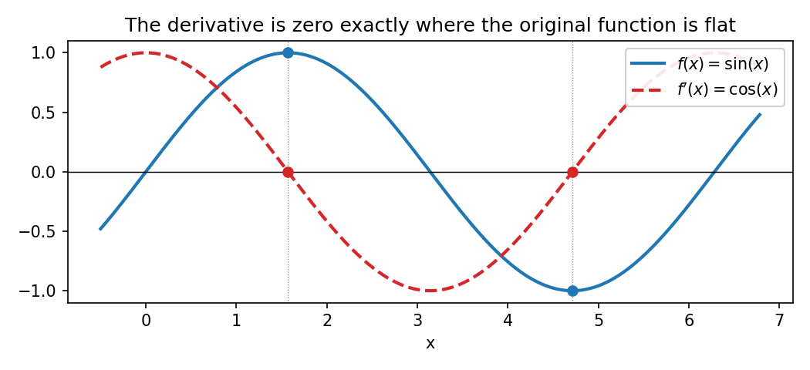
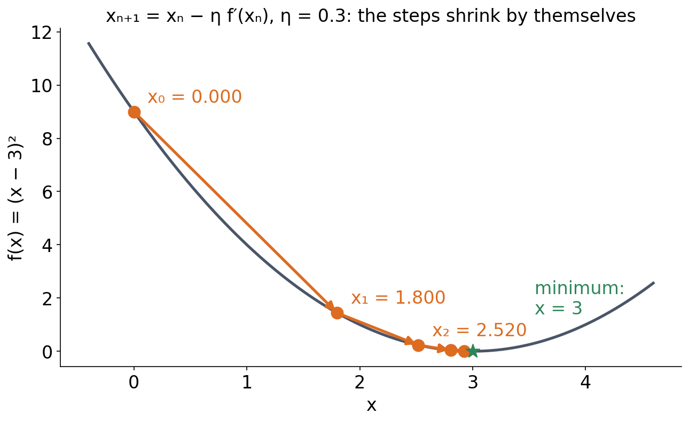
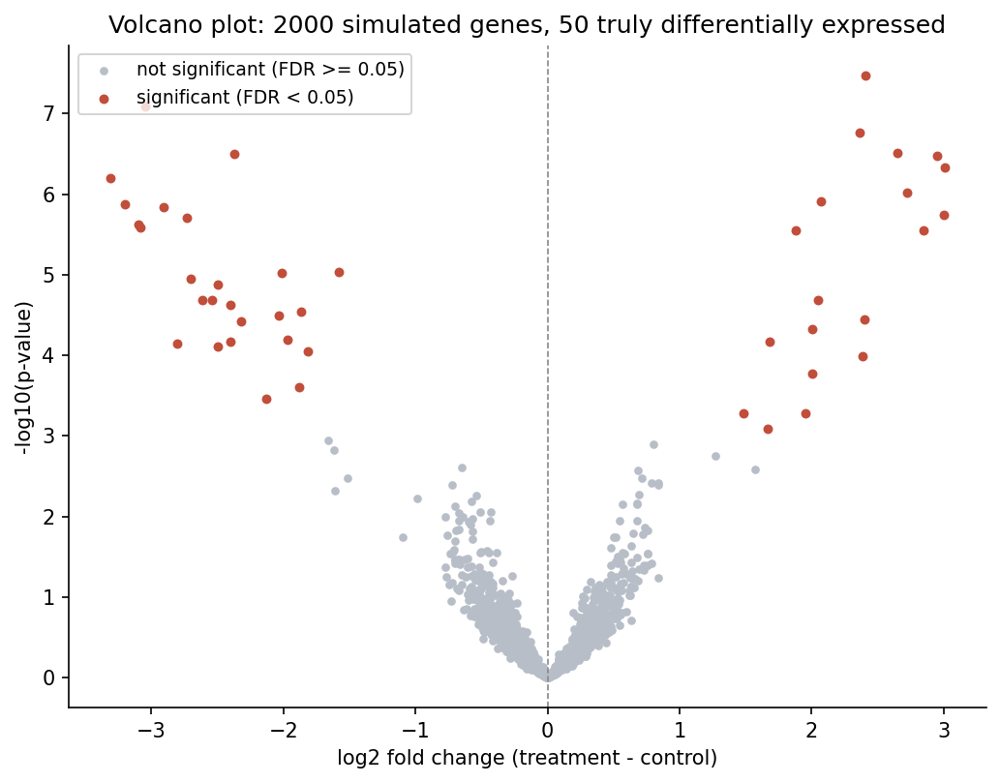

1 Session 1: Math Prerequisites
Sources for this page: d2l.ai, Dive into Deep Learning, Preliminaries (§2.3 Linear Algebra, §2.5 Calculus, §2.6 Probability and Statistics) — CC BY-SA 4.0; Wikipedia, Dot product, Norm (mathematics), Matrix norm, Matrix multiplication, Transpose, Cross product, Unit vector, Eigenvalues and eigenvectors, Principal component analysis, Tensor, Gradient, Chain rule, Bayes’ theorem, P-value, Student’s t-test, Multiple comparisons problem, False discovery rate, Volcano plot (statistics), Exponential function, Logarithm, Sigmoid function, Integral, Variance, Standard deviation, Normal distribution — CC BY-SA 4.0. Text below is written from scratch, not copied, following these ideas; standard results (the geometric dot-product formula, the chain rule, Bayes’ theorem, the t-test formula) are stated in the conventional way found in any of these sources. The volcano-plot figure uses simulated data, generated for this book.
Notebook: Session 1 — Math in code — the code behind this page. Download it to run it yourself.
This session is not “all the mathematics you might need”. It is the mathematical vocabulary we use in this course, worked through with real numbers, and each idea comes with a pointer to where it shows up later. This session has no programming exercises and no lab; programming starts in Session 2, whose lab is the first of the course. The notebook linked at the bottom nevertheless lets you check this session’s answers in code. You set up VS Code and Colab (Setup) before Session 2, whose lab is the first to use it.
The session has three parts:
- Vectors and matrices: vectors, dimensions and shapes, the dot product, matrix multiplication (and the transpose), normalisation, and an intuitive look at eigenvectors and PCA.
- Calculus for machine learning: derivatives, partial derivatives, the gradient, gradient descent and the chain rule.
- Probability and statistics: a short recap, correlation (Pearson and Spearman), conditional probability, logs and log-odds, likelihood, p-values and multiple testing, and an RNA-seq example.
Each part ends with practice problems, a quick self-check and one short video (not made by us). The other videos listed there are optional: most of this material will be familiar, and they are there if you want to refresh a topic.
1.1 Learning goals
By the end of this session you should:
- work comfortably with vectors, matrices, dot products and dimensions;
- understand derivatives, gradients and why gradient descent works;
- understand conditional probability and how \(P(A \mid B)\) differs from \(P(B \mid A)\);
- understand logs, likelihood and why bioinformatics uses log-scores;
- understand entropy as average surprise, and cross-entropy as its link to likelihood;
- understand p-values and why multiple testing requires FDR control.
1.2 Vectors and matrices
1.2.1 Vectors
A vector is just an ordered list of numbers. You already know how to add two vectors (add the corresponding entries) and how to scale one (multiply every entry by the same number). What needs a closer look is how big a vector is. For a single number, \(|x|\) measures its distance from zero, that is, its size regardless of sign. Vectors and matrices generalise this idea, just as they generalise everything else in this session.
For a vector, the natural generalisation is its length (also called its norm), written \(\lVert \mathbf{v} \rVert\). It is a direct extension of the Pythagorean theorem to more than two dimensions:
\[ \lVert \mathbf{v} \rVert = \sqrt{v_1^2 + v_2^2 + \dots + v_n^2} \]
Worked example. For \(\mathbf{v} = (3, 4)\):
\[ \lVert \mathbf{v} \rVert = \sqrt{3^2 + 4^2} = \sqrt{25} = 5 \]

1.2.2 Dimensions and shapes
The number of entries in a vector is its dimension. The vector \((3, 4)\) is 2-dimensional, and the 20-number amino acid composition of a protein is a 20-dimensional vector. A matrix is a rectangular grid of numbers, and its shape is its number of rows and columns, so a matrix with \(n\) rows and \(m\) columns has shape \((n, m)\), also written \(n \times m\). For everything you will do in NumPy and PyTorch, one habit matters more than any formula: always know the shape of every matrix and vector. In biology, a matrix is almost always a data table, as in these two examples:
- Gene expression. Measure 20,000 genes in 50 patient samples, and you have a matrix of shape \((50, 20000)\). Row \(i\) is one sample’s expression profile; column \(j\) is one gene across all the samples.
- Protein features. Describe 1,000 proteins by their amino acid composition (the fraction of each of the 20 amino acids), and you have a matrix \(X\) of shape \((1000, 20)\): one row per protein, one column per feature.
Vectors and matrices are the first two members of a bigger family called tensors. A single number is a 0-dimensional tensor, a vector is 1-dimensional and a matrix is 2-dimensional, and a tensor can continue to 3 dimensions (a stack of matrices) or more. A batch of 32 protein sequences of length 100, with each position one-hot encoded over 20 amino acids, is therefore a tensor of shape \((32, 100, 20)\). Session 2 introduces tensors properly, as the one data structure PyTorch uses for everything, and the shape rules below carry over unchanged.
1.2.3 The dot product
Once we have vectors, matrices and tensors, we need to calculate with them, that is, apply operations to them. The first operation we discuss is the dot product:
\[ \mathbf{w} \cdot \mathbf{x} = w_1 x_1 + w_2 x_2 + \dots + w_n x_n \]
The dot product simply multiplies the corresponding entries and adds everything up. It is still worth naming, because it shows up constantly. It is a weighted sum, in which each \(x_i\) contributes to the total in proportion to its weight \(w_i\).
Worked example. For \(\mathbf{w} = (2, -1)\) and \(\mathbf{x} = (1, 4)\):
\[ \mathbf{w} \cdot \mathbf{x} = (2)(1) + (-1)(4) = 2 - 4 = -2 \]
Besides this arithmetic definition, the dot product has a geometric meaning that is worth keeping in mind:
\[ \mathbf{w} \cdot \mathbf{x} = \lVert \mathbf{w} \rVert \, \lVert \mathbf{x} \rVert \cos\theta \]
Here \(\theta\) is the angle between the two vectors and \(\lVert \cdot \rVert\) is the length defined above. The formula gives the sign of a dot product for free, without computing anything. The dot product is positive when the angle between the vectors is less than 90° (they point in broadly the same direction), zero when they are exactly perpendicular, and negative when the angle exceeds 90° (they point in broadly opposite directions). In the worked example above, \(\mathbf{w}\) and \(\mathbf{x}\) are about 103° apart, just past perpendicular, which is why their dot product came out negative:

Why does this one computation deserve so much attention before the course has properly started? The reason is that it reappears, unchanged, in two very different-looking places later in the course. A profile score (Session 5), the standard way of asking “how well does this sequence match a known family?”, multiplies each position’s observed value by a position-specific weight and sums the results. A perceptron (Session 7), the simplest kind of artificial neuron, computes its output in the same way, as a dot product between a weight vector and an input vector. When we get there, you will therefore already know both the arithmetic and the geometric intuition, and the only new part will be what to do with the result.
1.2.4 Matrix multiplication
Matrix multiplication extends the dot product from one pair of vectors to many. A matrix can be read as a stack of vectors (its rows, or equally its columns), so a matrix–vector product is simply a batch of dot products, one per row of the matrix. For example,
\[ \begin{pmatrix} 2 & -1 \\ 0 & 3 \end{pmatrix} \begin{pmatrix} 1 \\ 4 \end{pmatrix} = \begin{pmatrix} (2)(1) + (-1)(4) \\ (0)(1) + (3)(4) \end{pmatrix} = \begin{pmatrix} -2 \\ 12 \end{pmatrix} \]
The first entry of the result is the dot product from the worked example above, and the second is a new dot product between the second row of the matrix and the same vector.
This matters as soon as we have real data. Take a classifier that predicts, say, whether a protein is secreted. It has one weight per feature, so its weight vector \(\mathbf{w}\) has shape \((20,)\). The product \(X\mathbf{w}\) then computes the dot product of every row of \(X\) with \(\mathbf{w}\):
\[ \underbrace{X}_{(1000,\ 20)} \; \underbrace{\mathbf{w}}_{(20,)} \;=\; \underbrace{X\mathbf{w}}_{(1000,)} \]
One matrix–vector product gives 1,000 scores, one per protein, and no loop is needed. This is how Session 7’s perceptron and Session 8’s classifiers are written: every example is stacked as a row of \(X\), and the scores are \(X\mathbf{w}\).
Whether two matrices can be multiplied depends only on their shapes. The inner dimensions must match, and the outer ones give the shape of the result:
\[ (n \times m)\,(m \times k) \;\rightarrow\; (n \times k) \]
- With three classes instead of one (say secreted, nuclear or cytoplasmic, as in Session 8), the weights become a matrix \(W\) of shape \((20, 3)\), and \(XW\) has shape \((1000, 3)\), three scores per protein.
- A weight vector of the wrong length, say 21, cannot be multiplied, because \((1000 \times 20)(21)\) has mismatched inner dimensions. PyTorch then stops with the error message
size mismatch, got input (1000), mat (1000x20), vec (21), and NumPy gives a similar complaint about mismatched dimensions. This is the most common error in this course’s code, and reading the shapes is how you fix it.
Worked example. Three proteins, two features each (say, the fraction of hydrophobic residues and of charged residues), and a weight vector \(\mathbf{w} = (2, -1)\):
\[ X = \begin{pmatrix} 0.5 & 0.1 \\ 0.2 & 0.4 \\ 0.3 & 0.3 \end{pmatrix}, \qquad X\mathbf{w} = \begin{pmatrix} (0.5)(2) + (0.1)(-1) \\ (0.2)(2) + (0.4)(-1) \\ (0.3)(2) + (0.3)(-1) \end{pmatrix} = \begin{pmatrix} 0.9 \\ 0.0 \\ 0.3 \end{pmatrix} \]
Shapes: \((3, 2)\) times \((2,)\) gives \((3,)\), one score per protein.
The transpose. The transpose \(X^\top\) swaps rows and columns. Entry \((i, j)\) of \(X\) becomes entry \((j, i)\) of \(X^\top\), so a \((1000, 20)\) matrix becomes \((20, 1000)\):
\[ \begin{pmatrix} 0.5 & 0.1 \\ 0.2 & 0.4 \\ 0.3 & 0.3 \end{pmatrix}^{\!\top} = \begin{pmatrix} 0.5 & 0.2 & 0.3 \\ 0.1 & 0.4 & 0.3 \end{pmatrix} \]
You will meet the transpose constantly, because it is how shapes are made to fit:
- The dot product is often written \(\mathbf{w}^\top \mathbf{x}\), a row vector times a column vector: \((1 \times m)(m \times 1) \rightarrow (1 \times 1)\), a single number.
- \(X^\top X\) has shape \((20, 1000)(1000, 20) \rightarrow (20, 20)\). It compares every feature with every other feature, summed over all proteins. For data with the column means subtracted, \(X^\top X / (n-1)\) is the covariance matrix of the features, the matrix PCA works on (below).
- Transposing a product reverses the order: \((AB)^\top = B^\top A^\top\). The shapes confirm it. \(AB\) is \((n \times k)\), so its transpose must be \((k \times n)\), and only \(B^\top A^\top\), \((k \times m)(m \times n)\), gives that.
1.2.5 Normalisation
The length of a vector often gets in the way when we only care about its direction. Dividing a vector by its own length removes it and produces a unit vector, which points in the same direction but has length exactly 1:
\[ \hat{\mathbf{w}} = \frac{\mathbf{w}}{\lVert \mathbf{w} \rVert} \]
Worked example. For \(\mathbf{w} = (2, -1)\) from above, the length formula gives \(\lVert \mathbf{w} \rVert = \sqrt{5} \approx 2.236\), so
\[ \hat{\mathbf{w}} = \left( \frac{2}{\sqrt{5}}, \frac{-1}{\sqrt{5}} \right) \approx (0.894, -0.447) \]
Normalising removes the factor \(\lVert \mathbf{w} \rVert\) from the geometric dot-product formula above and leaves only the angle. The dot product of two unit vectors is therefore their cosine similarity, a common way of comparing feature or embedding vectors when direction matters more than magnitude, and an important ingredient of most modern machine-learning methods. Normalisation also matters in practice. Two vectors that point in the same direction but are written down at different scales (say, one is exactly ten times the other) give very different raw dot products, even though they represent the same underlying match. Normalising both to unit vectors first makes their scores directly comparable. (This is the surprise in this session’s in-class discussion problem, if you have done it.)
The length of a matrix is defined in the same way. If we treat every entry as part of one long vector, the length formula gives the matrix’s Frobenius norm,
\[ \lVert A \rVert_F = \sqrt{\textstyle\sum_{i,j} a_{ij}^2} \]
a single number that measures how “big” a matrix is overall. It is useful throughout the rest of the course, for instance to measure how much two matrices differ (the norm of their difference), or how large a set of learned weights has grown during training.
1.2.6 Eigenvectors and PCA, intuitively
A matrix \(A\) transforms any vector it multiplies, and usually changes both its length and its direction. For most matrices, however, a handful of special directions keep their orientation and are only stretched or shrunk. Such a vector \(\mathbf{v}\) is an eigenvector of \(A\), and the factor it is scaled by is the corresponding eigenvalue \(\lambda\):
\[ A \mathbf{v} = \lambda \mathbf{v} \]
Example. For \(A = \begin{pmatrix} 2 & 1 \\ 1 & 2 \end{pmatrix}\), the vector \((1, 1)\) is an eigenvector with eigenvalue 3. One matrix–vector product confirms this: \(A(1, 1) = (2 + 1,\ 1 + 2) = (3, 3) = 3 \times (1, 1)\). The other eigenvector is \((1, -1)\), with eigenvalue 1. Geometrically, \(A\) stretches anything along \((1, 1)\) by a factor of 3 and leaves \((1, -1)\) unchanged. Every other vector is a mixture of the two, so it is turned towards the \((1, 1)\) axis.
You will not need to compute eigenvalues by hand in this course, because a computer does it (np.linalg.eigh, as in the notebook). What matters is the idea and where it is used. Principal component analysis (PCA) finds the directions of greatest variance in a dataset, and these directions are the eigenvectors of the covariance matrix \(X^\top X/(n-1)\) from the section above. The eigenvalues say how much of the variance each direction explains. PCA is the standard first look at a gene-expression matrix. If every sample is plotted along the first two eigenvectors, samples with similar expression cluster together.
For vectors in three dimensions, the cross product \(\mathbf{a} \times \mathbf{b}\) produces a new vector, not a number, that is perpendicular to both \(\mathbf{a}\) and \(\mathbf{b}\):
\[ \mathbf{a} \times \mathbf{b} = \begin{pmatrix} a_2 b_3 - a_3 b_2 \\ a_3 b_1 - a_1 b_3 \\ a_1 b_2 - a_2 b_1 \end{pmatrix} \]
For example, \((2, -1, 3) \times (1, 4, 0) = \big((-1)(0) - (3)(4),\ (3)(1) - (2)(0),\ (2)(4) - (-1)(1)\big) = (-12,\ 3,\ 9)\).
Its length equals \(\lVert \mathbf{a} \rVert \, \lVert \mathbf{b} \rVert \sin\theta\), with the sine where the dot product has the cosine. It is therefore largest when the two vectors are perpendicular and zero when they are parallel. The cross product exists only in three dimensions. In structural biology it gives the direction perpendicular to a plane, such as the plane of three backbone atoms, and it is often used when transforming and rotating protein structures (Sessions 6 and 12).
Practice. Compute \((1, 2, 0) \times (0, 1, 3)\). Answer: \(\big((2)(3)-(0)(1),\ (0)(0)-(1)(3),\ (1)(1)-(2)(0)\big) = (6, -3, 1)\).
Practice problems.
- Compute the length of \(\mathbf{v} = (1, 2, 2)\) and the Frobenius norm of \(A = \begin{pmatrix} 1 & 0 \\ 0 & 1 \end{pmatrix}\).
- Compute \((2, -1, 3) \cdot (1, 4, 0)\).
- Normalise \(\mathbf{v} = (3, 4)\).
- An expression matrix \(X\) holds 500 samples × 20 genes, and \(\mathbf{w}\) has one weight per gene. What are the shapes of \(X\), \(\mathbf{w}\), \(X\mathbf{w}\), \(X^\top\) and \(X^\top X\)? Can you compute \(X\mathbf{u}\) for a vector \(\mathbf{u}\) with 500 entries? And \(X^\top \mathbf{u}\)?
- Compute \(X\mathbf{w}\) for \(X = \begin{pmatrix} 1 & 0 & 2 \\ 0 & 1 & 1 \end{pmatrix}\) and \(\mathbf{w} = (1, 2, 3)\), and write down \(X^\top\).
- Check that \((1, -1)\) is an eigenvector of \(A = \begin{pmatrix} 2 & 1 \\ 1 & 2 \end{pmatrix}\), and read off its eigenvalue.
- \(\lVert \mathbf{v} \rVert = \sqrt{1^2+2^2+2^2} = \sqrt{9} = 3\); \(\lVert A \rVert_F = \sqrt{1^2+0^2+0^2+1^2} = \sqrt{2} \approx 1.414\).
- \((2)(1) + (-1)(4) + (3)(0) = 2 - 4 + 0 = -2\).
- \(\lVert \mathbf{v} \rVert = \sqrt{3^2+4^2} = 5\), so \(\hat{\mathbf{v}} = (0.6, 0.8)\).
- \(X\): \((500, 20)\); \(\mathbf{w}\): \((20,)\); \(X\mathbf{w}\): \((500,)\), one score per sample; \(X^\top\): \((20, 500)\); \(X^\top X\): \((20, 20)\). \(X\mathbf{u}\) is impossible, since the inner dimensions 20 and 500 don’t match. \(X^\top \mathbf{u}\) works: \((20, 500)(500,) \rightarrow (20,)\), one number per gene.
- \(X\mathbf{w} = \big((1)(1) + (0)(2) + (2)(3),\ (0)(1) + (1)(2) + (1)(3)\big) = (7, 5)\), and \(X^\top = \begin{pmatrix} 1 & 0 \\ 0 & 1 \\ 2 & 1 \end{pmatrix}\).
- \(A(1, -1) = (2 - 1,\ 1 - 2) = (1, -1) = 1 \times (1, -1)\): same direction, eigenvalue 1.
Check your understanding:
1.2.7 Further reading
- Wikipedia, Norm (mathematics) and Matrix norm
- Wikipedia, Dot product — the algebra in more generality than needed here (complex vectors, function spaces)
- Wikipedia, Matrix multiplication and Transpose
- Wikipedia, Unit vector and Cross product (optional)
- Wikipedia, Eigenvalues and eigenvectors and Principal component analysis
- Wikipedia, Tensor — the general mathematical object; Session 2 covers the practical, code-first version
- d2l.ai, Linear Algebra — matrices, shapes, transposes and norms at the same level as above, with code
1.2.8 Further watching
Dot products and duality (3Blue1Brown, Essence of Linear Algebra, ch. 9, 14 min) animates the geometric picture of the dot product above:
Optional videos, if you want to refresh more of this part:
- Cross products (3Blue1Brown, Essence of Linear Algebra, ch. 10, 9 min), for the optional cross-product box;
- Eigenvectors and eigenvalues (3Blue1Brown, Essence of Linear Algebra, ch. 14, 17 min).
1.3 Calculus for machine learning
1.3.1 Derivatives
A derivative tells you how much a function’s output changes for a small change in its input; it is the slope of the tangent line at a point. If you have seen derivatives before, that is the whole idea. What is worth reviewing is what happens once there is more than one input, but first we need a few standard derivatives.
The table below lists the derivatives that come up constantly in this course. They are worth memorising rather than re-deriving every time:
| \(f(x)\) | \(f'(x)\) |
|---|---|
| constant \(c\) | \(0\) |
| \(x^n\) | \(n x^{n-1}\) |
| \(e^x\) | \(e^x\) |
| \(\ln(x)\) | \(1/x\) |
| \(\sin(x)\) | \(\cos(x)\) |
| \(\cos(x)\) | \(-\sin(x)\) |
| \(\sigma(z) = 1/(1+e^{-z})\) | \(\sigma(z)\,(1-\sigma(z))\) |
The last row deserves special attention. It is the derivative that Session 9’s backpropagation needs for every sigmoid-activated unit in a network. It is usually written in terms of \(\sigma(z)\) itself, rather than expanded in \(e^{-z}\), because \(\sigma(z)\) has already been computed on the forward pass, so the derivative costs nothing extra.
A derivative is zero where a function is momentarily flat, that is, at a peak, a trough, or an inflection point with a horizontal tangent. \(\sin(x)\) and its derivative \(\cos(x)\) make this directly visible:

1.3.2 Partial derivatives and the gradient
Most functions in machine learning have many inputs, so we need derivatives with respect to each of them. A partial derivative of a function of several variables, written \(\partial y / \partial x_i\), is computed by treating every variable except \(x_i\) as a constant and differentiating as usual. Stacking all the partial derivatives of a function into one vector gives its gradient:
\[ \nabla y = \left( \frac{\partial y}{\partial x_1}, \dots, \frac{\partial y}{\partial x_n} \right) \]
Worked example. For \(f(x_1, x_2) = 3x_1^2 + 2x_1 x_2\):
\[ \frac{\partial f}{\partial x_1} = 6x_1 + 2x_2, \qquad \frac{\partial f}{\partial x_2} = 2x_1 \]
(For \(\partial f/\partial x_1\), \(x_2\) is held constant, so \(2x_1 x_2\) differentiates like \(2x_2 \cdot x_1\), giving \(2x_2\). For \(\partial f/\partial x_2\), \(x_1\) is held constant, so \(3x_1^2\) contributes nothing and \(2x_1 x_2\) differentiates to \(2x_1\).) At the point \((1, 2)\):
\[ \nabla f(1, 2) = (6(1) + 2(2), \ 2(1)) = (10, 2) \]
Geometrically, the gradient at a point tells you two things at once: the direction in which the function increases fastest, and, through its length, how steeply it increases. If you point yourself in the opposite direction, you are therefore heading downhill as fast as possible from where you stand.
1.3.3 Gradient descent
Stepping against the gradient is the whole idea behind gradient descent, which Session 7 uses to train the perceptron mentioned above. Suppose we have a function that measures how wrong a model’s predictions are (a loss function). If we repeatedly take a sufficiently small step in the direction opposite to its gradient, the loss decreases, at least locally. Concretely, the update rule is
\[ x_{n+1} = x_n - \eta \, f'(x_n) \]
where \(\eta\) (eta) is a small positive learning rate that controls the step size. We can watch this converge, one step at a time, for the one-variable function \(f(x) = (x - 3)^2\), whose derivative is \(f'(x) = 2(x-3)\), starting from \(x_0 = 0\) with \(\eta = 0.3\):
| \(n\) | \(x_n\) | \(f(x_n)\) | \(f'(x_n)\) | \(x_{n+1} = x_n - 0.3 f'(x_n)\) |
|---|---|---|---|---|
| 0 | 0.000 | 9.00 | -6.00 | 1.800 |
| 1 | 1.800 | 1.44 | -2.40 | 2.520 |
| 2 | 2.520 | 0.23 | -0.96 | 2.808 |
| 3 | 2.808 | 0.037 | -0.384 | 2.923 |

Two things stand out in the table and in Figure 1.4. First, \(x_n\) closes in on 3, the true minimum, where \(f'(x) = 0\). Second, the steps themselves shrink as \(x_n\) gets closer, simply because the derivative shrinks, so nobody has to decrease \(\eta\) by hand. From Session 7 on, you will see the same iterations inside a real model’s training loop. The only difference is that many weights are updated at once, using the gradient vector instead of a single derivative.
1.3.4 The chain rule
The idea from calculus that matters most for this course is the chain rule. For a composite function \(y = f(g(x))\), the derivative is
\[ \frac{dy}{dx} = \frac{df}{dg} \cdot \frac{dg}{dx} \]
In words, the derivative of a function of a function is the product of their individual derivatives. This looks unremarkable, but it is the one idea that backpropagation (Session 9) is built from. A neural network’s output is a function of a function of a function of its weights. The chain rule lets us compute how each weight, however deeply buried, should change, by multiplying together the derivatives of every function it passes through on the way to the output.
Integration is differentiation run backwards: given a derivative, it finds the function the derivative came from. Geometrically, the definite integral \(\int_a^b f(x)\,dx\) is the area under the curve of \(f\) between \(a\) and \(b\). The indefinite integral \(\int f(x)\,dx\) recovers a whole family of functions that differ only by a constant \(C\). Since the derivative of a constant is always zero (see the table above), integration alone can never tell which constant the original function had.
Worked example. For the gradient-descent table above, we differentiated \(f(x) = (x-3)^2\) into \(f'(x) = 2(x-3)\). Integrating goes the other way and should recover \(f\) itself, up to a constant:
\[ \int 2(x-3)\,dx = (x-3)^2 + C \]
This is the \(f(x)\) the worked example started from. It illustrates, informally, the Fundamental Theorem of Calculus: integration and differentiation are inverse operations.
Integrals show up in two places later in the course, and neither requires solving an integral by hand. First, a continuous probability density is not itself a probability. Only the area under a stretch of it, its integral over that range, gives an actual probability. Second, from Session 8 on, the “area under the ROC curve” (AUROC) and the “area under the precision-recall curve” (AUPR) are two of the course’s standard metrics for evaluating classifiers. Both are integrals, but they are computed numerically (by the trapezoidal rule, which sums thin strips under a finite set of points) rather than solved in closed form, because a real ROC curve is not a tidy algebraic function.
Practice problem. For \(f(x) = 4x^3\), find \(f'(x)\) using the table above, then integrate your answer and confirm that you recover \(f(x)\) itself, up to a constant.
Solution: \(f'(x) = 12x^2\), by the power rule \(\frac{d}{dx}x^n = nx^{n-1}\) with \(n = 3\), times the constant factor 4: \(\frac{d}{dx}(4x^3) = 4 \cdot 3x^2 = 12x^2\). Integrating back: \(\int 12x^2\,dx = 4x^3 + C\), which is \(f(x)\) up to the constant integration can never recover.
Practice problem. For \(f(x_0, x_1) = 3x_0^2 + 2x_0 x_1\), compute \(\nabla f\) at the point \((1, 2)\).
\(\partial f/\partial x_0 = 6x_0 + 2x_1 = 6(1) + 2(2) = 10\); \(\partial f/\partial x_1 = 2x_0 = 2(1) = 2\). So \(\nabla f(1,2) = (10, 2)\).
Check your understanding:
1.3.5 Further reading
- Wikipedia, Gradient and Chain rule — further into multivariate calculus (Jacobians, the generalised chain rule) than this course needs
- Wikipedia, Integral — the formal definition and techniques of integration, beyond the informal treatment above
- d2l.ai, Calculus — the same gradient-descent idea, with code
1.3.6 Further watching
Visualizing the chain rule and product rule (3Blue1Brown, Essence of Calculus, ch. 4, 16 min):
Optional videos, if you want to refresh more of this part (3Blue1Brown, Essence of Calculus):
- The paradox of the derivative (ch. 2, 17 min), on what “instantaneous rate of change” actually means;
- Derivative formulas through geometry (ch. 3, 18 min), on where the formulas in the table of derivatives come from;
- Integration and the fundamental theorem of calculus (ch. 8, 21 min);
- What does area have to do with slope? (ch. 9, 13 min), a second view of why integration and differentiation are inverses.
1.4 Probability and statistics
Probability in general is covered by the biostatistics course. This part gives the vocabulary that the rest of this course uses. It starts with a short recap and correlation, continues with conditional probability, log probabilities and log-odds, likelihood, and p-values with multiple testing, and ends with an RNA-seq example.
1.4.1 A short recap: expectation and variance
The expectation of a random variable is its probability-weighted average, \(\mathbb{E}[X] = \sum_i x_i \, P(X = x_i)\). For a fair die it is \(3.5\).
The expectation says nothing about how spread out the values are. That is measured by the variance, \(\text{Var}(X) = \mathbb{E}\big[(X-\mu)^2\big]\), the average squared distance from the mean. The standard deviation \(\sigma = \sqrt{\text{Var}(X)}\) puts the spread back in the units of \(X\) (for the die, \(\sigma \approx 1.71\)). For a normal distribution, about 95% of the values lie within \(2\sigma\) of the mean.
1.4.2 Correlation: Pearson and Spearman
Often we want to know whether two variables go together, for example the mRNA and protein levels of a gene. A correlation coefficient measures how strongly they do, on a scale from \(-1\) (one goes up as the other goes down) through \(0\) to \(+1\) (they go up together). The two common coefficients differ in what “going together” means:
- Pearson’s \(r\) measures how well the points fit a straight line: the covariance of \(x\) and \(y\) divided by the product of their standard deviations, \[ r = \frac{\sum_i (x_i - \bar{x})(y_i - \bar{y})}{\sqrt{\sum_i (x_i - \bar{x})^2}\,\sqrt{\sum_i (y_i - \bar{y})^2}} \]
- Spearman’s \(\rho\) is Pearson’s \(r\) computed on the ranks of the values instead of the values themselves. It measures whether \(y\) tends to increase when \(x\) does (a monotonic relationship), whether or not along a straight line, and a single extreme value cannot dominate it.
Worked example. Five genes have mRNA levels \((1, 2, 3, 4, 100)\) and protein levels \((2, 4, 6, 8, 10)\). Every increase in mRNA goes with an increase in protein, so Spearman’s \(\rho = 1\). Pearson’s \(r\), however, is only 0.72, because the one extreme value does not lie on the line through the others. With 5 instead of 100, it would be exactly 1.
Three cautions apply to any correlation, and all of them are used in Session 2:
- Plot first. Both coefficients are 0 for a U-shaped relationship, and a single number can hide what a scatter plot shows at once.
- A correlation has a p-value too, and it depends on the number of points. A strong-looking correlation from five points can easily arise by chance.
- Correlation is not causation. Two variables can move together because both depend on a third.
1.4.3 Conditional probability
Many questions in biology are about probabilities under a condition, for example the probability that a protein has a signal peptide given that it is a membrane protein. The probability of \(A\) given that \(B\) has happened, written \(P(A \mid B)\), restricts attention to the cases where \(B\) is true:
\[ P(A \mid B) = \frac{P(A \text{ and } B)}{P(B)} \]
Worked example. A fair die is rolled. Given that the result is greater than 3, what is the probability that it is even? Only 4, 5 and 6 remain, and two of them are even, so \(P(\text{even} \mid X > 3) = 2/3\), not the unconditional \(1/2\).
The direction matters. \(P(A \mid B)\) and \(P(B \mid A)\) are different numbers. Suppose that among 200 proteins, 60 are membrane proteins and 30 of those have a signal peptide, while 20 of the other 140 have one too. Then \(P(\text{signal peptide} \mid \text{membrane}) = 30/60 = 0.5\), but \(P(\text{membrane} \mid \text{signal peptide}) = 30/50 = 0.6\). Mixing the two up is one of the most common errors in reading statistics, and it is the error behind misreading p-values (below).
Conditional probabilities are everywhere in this course. A profile or hidden Markov model (Session 5) gives the probability of a residue given the position in the family, and a classifier (Session 8) gives the probability of a class given the input.
Bayes’ rule turns one conditional probability into the other. It follows from applying the definition of conditional probability in both directions:
\[ P(A \mid B) = \frac{P(B \mid A) \, P(A)}{P(B)} \]
Example. A condition affects 1% of a population. A diagnostic test detects it in 95% of the people who have it, \(P(\text{positive} \mid \text{disease}) = 0.95\), and gives a false positive in 5% of the people who do not. If someone tests positive, what is the probability that they have the condition? Positive results come from both groups, so \(P(\text{positive}) = (0.95)(0.01) + (0.05)(0.99) = 0.059\), and
\[ P(\text{disease} \mid \text{positive}) = \frac{(0.95)(0.01)}{0.059} \approx 0.16 \]
Despite the 95% sensitivity of the test, a positive result therefore means only about a 16% chance of having the condition. The condition is rare, so the false positives from the large healthy group outnumber the true positives. Bayes’ rule combines a prior (1% have the condition) with evidence (the test). Maximum likelihood, below, in contrast uses only the likelihood and no prior.
1.4.4 Log probabilities and log-odds
The probability of a whole sequence is a product of per-position probabilities, and products of many small numbers quickly become impossibly small. Under a uniform model, in which A, C, G and T are equally likely, any particular 1,000-base sequence has the probability \(0.25^{1000} \approx 10^{-602}\). This is smaller than the smallest number a computer normally stores, so the computer may round it to zero. The logarithm solves the problem, because it turns multiplication into addition:
\[ \log(xy) = \log(x) + \log(y) \]
The log-probability of the sequence is then a sum of 1,000 per-base terms, \(1000 \times \log_{10}(0.25) \approx -602\), which is an ordinary number. (Logarithms to different bases, \(\ln\), \(\log_2\) and \(\log_{10}\), differ only by a constant factor.)
Log-odds scores. In bioinformatics we usually compare two models. Is this sequence better explained by a family model or by the background frequencies? The log-odds score answers this question. It is the log of the ratio of the sequence’s probabilities under the two models, and for independent positions it is a sum of per-position terms:
\[ S = \log \frac{P(\text{sequence} \mid \text{model})}{P(\text{sequence} \mid \text{background})} = \sum_i \log \frac{P(x_i \mid \text{model})}{P(x_i \mid \text{background})} \]
A positive score means that the model explains the sequence better, and a negative one that the background does. Substitution matrices (Session 4, where BLOSUM entries are scaled log-odds) and profile scores (Session 5, where a PSSM column is a list of log-odds) work in this way, which is why their scores are added along an alignment.
Worked example. A GC-rich model gives G and C the probability 0.35 each, and A and T 0.15 each, while the background gives every base 0.25. Per base, in bits (\(\log_2\)), G or C scores \(\log_2(0.35/0.25) = +0.49\), and A or T scores \(\log_2(0.15/0.25) = -0.74\). The sequence GCGCAT therefore scores
\[ S = 4 \times 0.49 + 2 \times (-0.74) \approx +0.47 \text{ bits} \]
so it is \(2^{0.47} \approx 1.4\) times more likely under the GC-rich model than under the background.
Logs of p-values. Very small p-values are also shown on a log scale. The transformation \(-\log_{10}(p)\) turns \(p = 0.001\) into 3 and \(p = 10^{-6}\) into 6, and it is the y-axis of the volcano plot below.
Back from log-odds to probability. The sigmoid function, \(\sigma(z) = 1/(1+e^{-z})\), undoes a (natural) log-odds: if \(z = \ln\big(p/(1-p)\big)\), then \(\sigma(z) = p\). Logistic regression (Session 8) models the log-odds of a class as a weighted sum of the inputs and uses the sigmoid to turn it into a probability. Applied to an arbitrary score, the sigmoid still gives a number between 0 and 1, but that number is a calibrated probability only if the model was trained for it. (The derivative of the sigmoid is in the table in Section 1.3.)
1.4.5 Likelihood
So far we have computed the probability of data under a given model. A probability model tells you how likely the data are, given the model’s parameters: \(P(\text{data} \mid \text{parameters})\). Read the other way round, as a function of the parameters for data you have already observed, the same number is called the likelihood:
\[ L(\text{parameters}) = P(\text{data} \mid \text{parameters}) \]
Worked example.
Suppose we observe a 10-base fragment in which seven positions are G/C and three are A/T. We model each position as G/C with probability \(p\), independently of the others. Because the positions are independent, the probability of the whole fragment is the product of the per-base probabilities:
\[ L(p) = p^7 (1-p)^3 \]
For \(p = 0.5\), \(L = 0.5^{10} \approx 0.00098\). For \(p = 0.7\), \(L = 0.7^7 \times 0.3^3 \approx 0.0022\), about 2.3 times higher, so the data are better explained by a GC-rich model. No value of \(p\) does better than 0.7, the observed fraction. Choosing the parameters that make the observed data most probable is called maximum likelihood, and it is how most models in this course are trained. Because a likelihood is a product, it is computed as a sum of logs, the log-likelihood (previous section). Many important loss functions later in the course, including cross-entropy (next section), are negative log-likelihoods, so minimising the loss maximises the likelihood.
1.4.6 Entropy: average surprise
The log of a probability also measures how surprising an outcome is. An outcome with probability \(p\) carries a surprise of \(-\log_2 p\) bits. A certain outcome (\(p = 1\)) carries 0 bits, a fair coin flip 1 bit, and one of four equally likely bases 2 bits. The entropy of a distribution is its average surprise:
\[ H(P) = -\sum_x P(x) \log_2 P(x) \]
Entropy therefore measures how unpredictable, or how variable, the outcomes are:
| Distribution | Entropy |
|---|---|
| one base always (a fully conserved alignment column) | 0 bits |
| A or G, half each | 1 bit |
| the GC-rich model above (0.35, 0.35, 0.15, 0.15) | 1.88 bits |
| all four bases equally likely | 2 bits, the maximum for DNA |
| all 20 amino acids equally likely | \(\log_2 20 \approx 4.32\) bits, the maximum for proteins |
The difference from the maximum, for example \(2 - H\) for a DNA column, is the column’s information content. It says how much knowing the family tells you about that position, and it is what the height of a stack in a sequence logo shows (Session 4).
Cross-entropy. Entropy assumes that we know the true distribution. Suppose instead that the data really come from a distribution \(P\), but we describe them with a model \(Q\). The average surprise we then experience is the cross-entropy:
\[ H(P, Q) = -\sum_x P(x) \log_2 Q(x) \]
The cross-entropy is never smaller than \(H(P)\), and it equals \(H(P)\) only when \(Q = P\). The extra cost, \(H(P,Q) - H(P)\), is the relative entropy (Kullback–Leibler divergence) of Session 4.
The link to likelihood. Take the 10-base fragment above, with observed frequencies 0.7 G/C and 0.3 A/T, and a model that gives G/C the probability \(p\). The cross-entropy is \(-(0.7 \log_2 p + 0.3 \log_2 (1-p))\), which is 1.00 bit for \(p = 0.5\) and 0.88 bits for \(p = 0.7\), the lowest possible value. This is exactly the log-likelihood per base with the sign changed, since \(\log_2 L(0.5) = -10\) bits for ten bases and \(\log_2 L(0.7) = \log_2 0.0022 \approx -8.8\). Minimising cross-entropy is therefore the same as maximum likelihood, and this is why cross-entropy is the loss used to train classifiers from Session 8 on.
Maximum entropy. Entropy can also be used to choose a model. Among all distributions that agree with what you have measured, you pick the one with the highest entropy, because it assumes nothing more than the measurements. Session 12 meets this idea in the contact-prediction method DCA.
The same formula, with a different constant and natural logarithms, is the entropy of statistical physics, which is where Shannon borrowed the name from. The hydrophobic effect that drives protein folding (Session 6) is largely an effect of this physical entropy, namely the entropy of the surrounding water.
1.4.7 p-values and hypothesis testing
Statistical testing starts from a null hypothesis (\(H_0\)), the assumption that there is no real effect and that any observed difference is due to chance. A p-value is the probability of seeing a result at least as extreme as the one actually observed, if the null hypothesis were true. By convention, \(p < 0.05\) is often treated as “statistically significant”, but this threshold is a convention, not a law of nature. What the threshold guarantees is the following. If the null hypothesis is true and the assumptions of the test hold, a test with a significance threshold of 0.05 rejects the null hypothesis with a probability of 5%.
It follows that a p-value is a conditional probability, \(P(\text{data this extreme} \mid H_0)\), and not \(P(H_0 \mid \text{data})\). Confusing the two is the direction error from the conditional-probability section. A small p-value tells you that the data would be surprising if there were truly no effect. It does not, by itself, tell you the probability that there is no effect.
The t-test, briefly. The biostatistics course covers the t-test in depth, so here we only recall the idea. The t-test is a classical test for comparing the means of two groups. Welch’s version, \(t = (\bar{x}_1 - \bar{x}_2)/\sqrt{s_1^2/n_1 + s_2^2/n_2}\), is usually preferred when equal variances cannot be assumed. A larger difference between the means, or less noisy data, gives a larger \(|t|\) and therefore a smaller p-value. For example, four control measurements \((5.1, 4.9, 5.3, 5.0)\) against four treatment measurements \((7.2, 6.8, 7.5, 7.0)\) give \(t \approx -11.9\) and \(p \approx 0.0001\).
1.4.8 The multiple testing problem
A p-value threshold of 0.05 means that, if the null hypothesis is true and the test’s assumptions hold, there is a 5% chance of a false positive for that one test. That is a reasonable risk to accept once. The situation is very different when the same test runs on every gene in a genome. If we simulate 2000 genes, none of which is actually differentially expressed, and test each one at \(p<0.05\), we get roughly \(2000 \times 0.05 = 100\) “significant” genes purely by chance. The result is a wall of false positives, not a list of real findings.
The solution is a multiple testing correction. Bonferroni’s correction is the simplest: it divides the significance threshold by the number of tests. For genomics, where thousands of tests are routine, it is often needlessly conservative. The standard alternative is to control the false discovery rate (FDR). Instead of the chance of any false positive, the FDR is the expected proportion of false positives among everything called significant. The Benjamini-Hochberg procedure is the common way to control it. It does so under specified assumptions (independent or positively correlated tests), and it stays informative even with tens of thousands of tests.
1.4.9 Worked example: RNA-seq differential expression and the volcano plot
The following example puts these ideas together on a realistic problem. We compare gene expression between a treatment and a control condition across 2000 genes, of which 50 are simulated to be genuinely differentially expressed, while the rest are pure noise. For each gene, a t-test gives a p-value. The fold change measures the size of the effect, independently of its statistical significance. It says how many times higher or lower the expression is in the treatment than in the control, and it is usually reported as the \(\log_2\) of that ratio.
A volcano plot shows both quantities at once, with the \(\log_2\) fold change on the x-axis and \(-\log_{10}(p\text{-value})\) on the y-axis. Smaller p-values, that is, stronger evidence, therefore plot higher up. The interesting genes are those that are both far from the centre (a big effect) and high up (strong evidence), and they give the plot the shape of its name:

With only the naive threshold \(p<0.05\) (Welch’s t-test for each gene), 135 genes in this simulated data are flagged as “significant”. Of those, 85 are false positives among the 1950 genes with no real effect, close to the ~97.5 expected by chance. With the Benjamini-Hochberg procedure at an FDR of 5% instead, 44 genes are flagged, and all 44 are among the 50 genes that are really differentially expressed. In this particular run there are no false positives, so the procedure recovers the large majority of the true effects while it stops the flood of false positives that the naive threshold let through. Note, however, that an FDR threshold of 5% does not guarantee zero false discoveries. That none of the 44 discoveries is false here is a property of this particular simulation.
Practice problems.
- Among 200 proteins, 60 are membrane proteins and 30 of those have a signal peptide; 20 of the other 140 have one too. What are \(P(\text{membrane} \mid \text{signal peptide})\) and \(P(\text{signal peptide} \mid \text{not membrane})\)?
- A 4-base fragment has 3 G/C and 1 A/T. Compute its likelihood under \(p_{GC} = 0.5\) and under \(p_{GC} = 0.75\). Which explains it better?
- With the GC-rich model of the worked example, what is the log-odds score of the sequence AT, in bits? Which model does it favour?
- If you test 100 genes with no real difference at \(p<0.05\) and apply no correction, about how many false positives should you expect by chance alone?
- A gene has a p-value of \(10^{-6}\). What is its height on a volcano plot’s y-axis, \(-\log_{10}(p)\)?
- An alignment column of a DNA motif has A in 70% of the sequences and C, G and T in 10% each. What is its entropy, and its information content, in bits?
- 50 proteins have a signal peptide, 30 of them membrane proteins: \(P(\text{membrane} \mid \text{signal peptide}) = 30/50 = 0.6\). \(P(\text{signal peptide} \mid \text{not membrane}) = 20/140 \approx 0.14\).
- \(L(0.5) = 0.5^4 = 0.0625\); \(L(0.75) = 0.75^3 \times 0.25 \approx 0.105\). The GC-rich value, \(p = 0.75\) (the observed fraction), explains it better.
- \(2 \times \log_2(0.15/0.25) = 2 \times (-0.74) \approx -1.47\) bits: negative, so the background model explains AT better.
- \(100 \times 0.05 = 5\) false positives expected, even though every one of the 100 genes is truly non-differentially-expressed.
- \(-\log_{10}(10^{-6}) = 6\).
- \(H = -(0.7 \log_2 0.7 + 3 \times 0.1 \log_2 0.1) \approx 0.36 + 1.00 = 1.36\) bits; information content \(2 - 1.36 \approx 0.64\) bits. Less variable than a random column (2 bits), far from fully conserved (0 bits).
Check your understanding:
1.4.10 Further reading
- Wikipedia, Pearson correlation coefficient and Spearman’s rank correlation coefficient
- Wikipedia, Conditional probability and Likelihood function
- Wikipedia, Logarithm, Log probability and Sigmoid function
- Wikipedia, P-value and Welch’s t-test
- Wikipedia, Multiple comparisons problem, False discovery rate, and Volcano plot (statistics)
- Wikipedia, Bayes’ theorem (optional)
- d2l.ai, Probability and Statistics — connects this directly to how machine-learning models are evaluated
1.4.11 Further watching
What Is A P-Value? - Clearly Explained (Steven Bradburn, 8 min):
Optional videos, if you want to refresh more of this part:
- False Discovery Rates, FDR, clearly explained (StatQuest with Josh Starmer, 18 min);
- from 3Blue1Brown, for the Bayes box and the recap: Bayes theorem, the geometry of changing beliefs, But what is the Central Limit Theorem?, Binomial distributions and Why “probability of 0” does not mean “impossible”.
1.5 The course notebook
notebooks/session01-math-in-code.ipynb recomputes every worked example and practice problem above in code, so that you can confirm that the code and the mathematics agree before Session 2 introduces the code side properly. For linear algebra, it covers the vector length, the dot product, matrix shapes and the transpose (1,000 proteins × 20 features), normalisation, eigenvalues found by the computer (with a small PCA) and the optional cross product. For calculus, it covers the gradient (by hand and by automatic differentiation) and gradient descent. For probability and statistics, it covers Pearson and Spearman correlation, conditional probability (exactly and by simulation), the optional Bayes example, log-odds scores, the GC likelihood, the t-test, and the simulated RNA-seq and volcano-plot analysis. The version below is a static, read-only copy. Open it in Google Colab via the badge at the top of the notebook page to edit and run it yourself.
1.6 What’s next
Session 2 takes every idea above and writes it in code the idiomatic way: the dot product becomes a line of PyTorch, and the gradient becomes something the framework computes for you automatically.